Эта Audi RS7 в исполнении PP-Performance – определённо достойна звания лучшего экземпляра года в категории «интересные модели». PP-Performance – популярная немецкая тюнинг-компания, которой принадлежат многочисленные рекорды и достижения в мире тюнинга. Эта мастерская известна своими эксцентричными дизайнерскими ходами, что в очередной раз подтвердила новая модель RS7. Впрочем, PP-Performance не обделили Audi и мощностью, произведя свой фирменный чип-тюнинг.
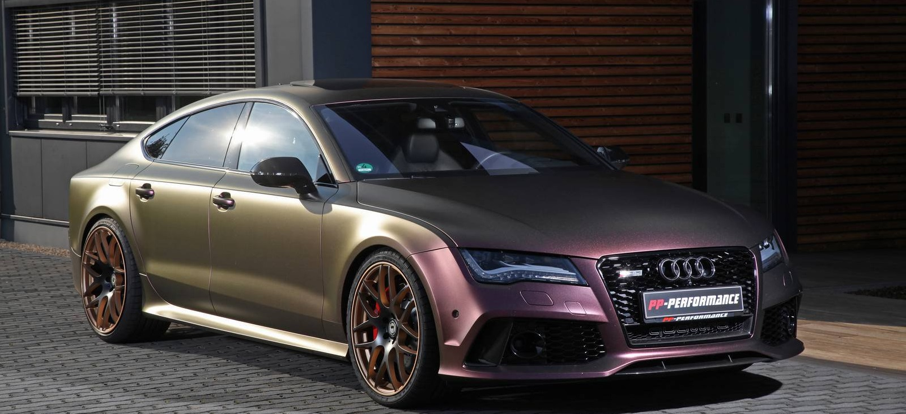Одним из самых значимых апгрейдов Audi RS7 стала установка кастомной системы выхлопа Evolution Line от Akrapovic. Титановый выхлоп уменьшил массу авто на 8,1 кг. Второй этап тюнинга заключается в удалении ограничителя скорости VMAX и установке фирменного воздушного фильтра BMC. Все эти апгрейды, включая чип-тюнинг, увеличили мощность RS7 до 745 л.с..
К внешнему оформлению Audi мастера PP-Performance подошли как никогда ответственно. В первую очередь они установили двухцветные 21-дюймовые диски Gambit с порошковым покрытием производства Schmidt. В дополнение к дискам предлагается новая подвеска производства KW. Пожалуй, самая оригинальная черта этого авто - виниловое покрытие от компании Cam Shaft. В зависимости от угла зрения и освещения, цвет автомобиля меняется от коричневого и фиолетового к желтому и золотому.
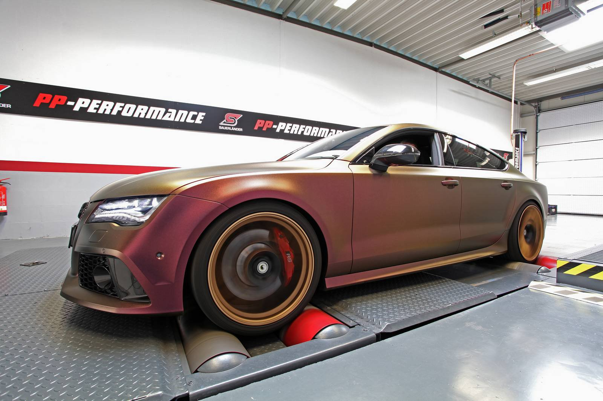 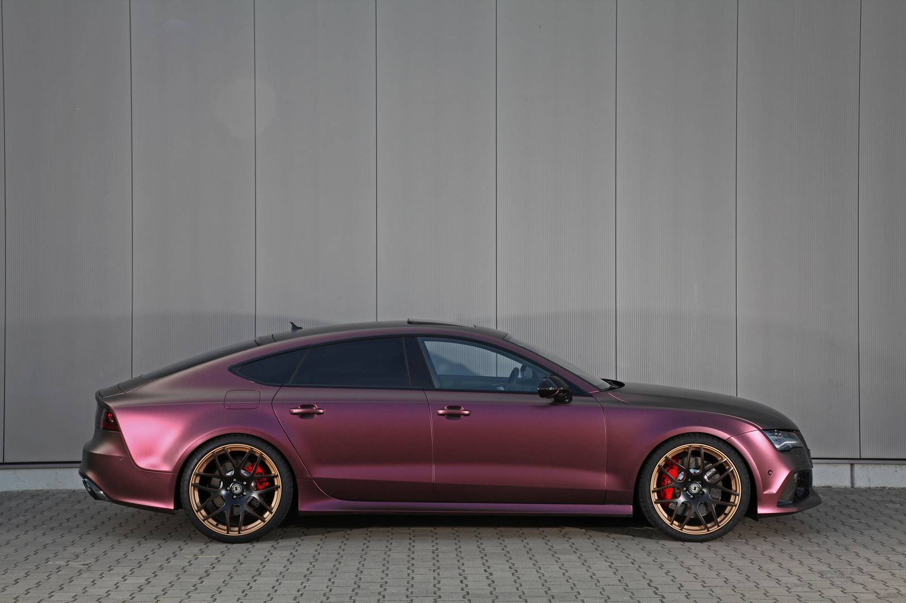 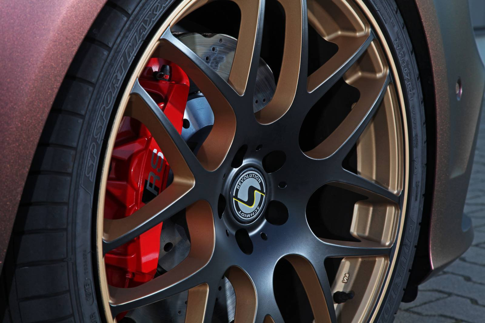 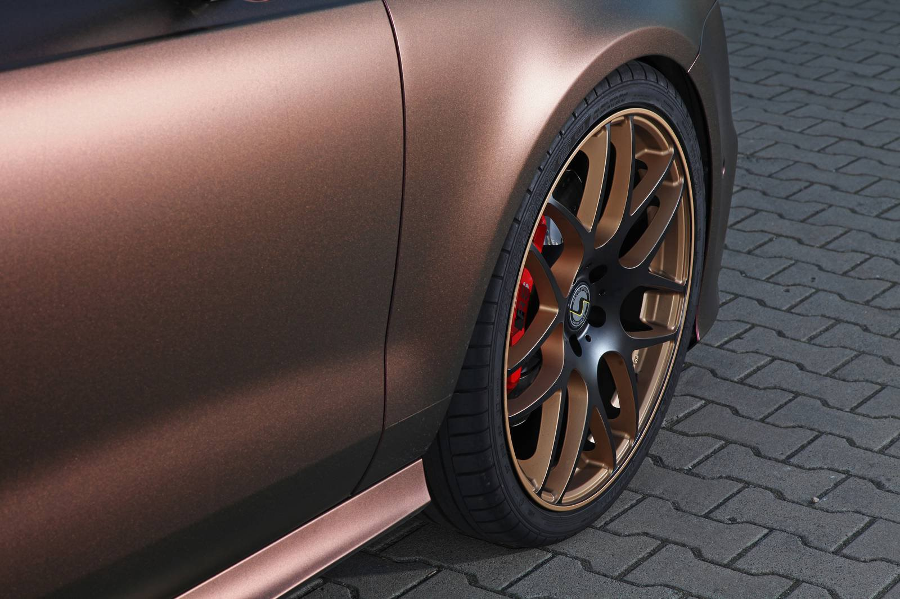 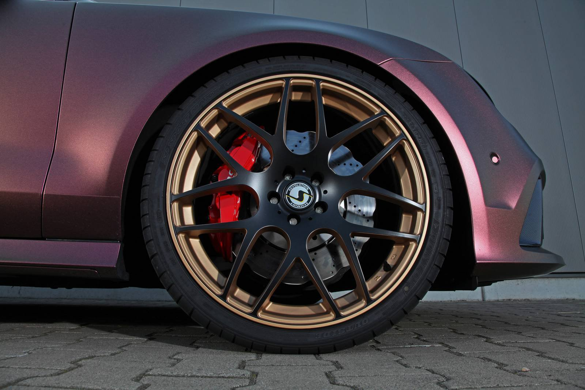 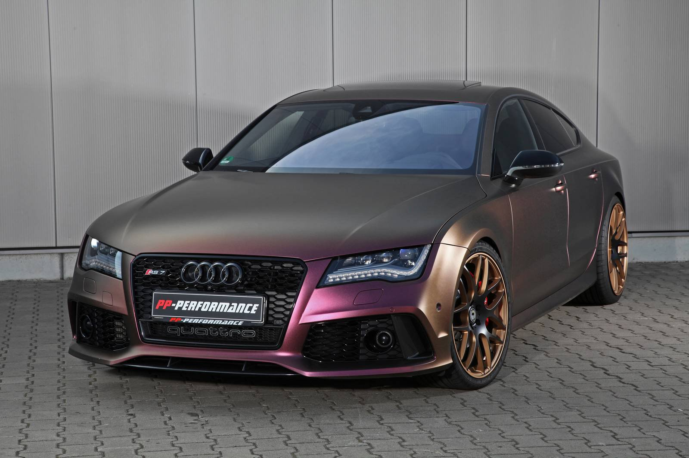 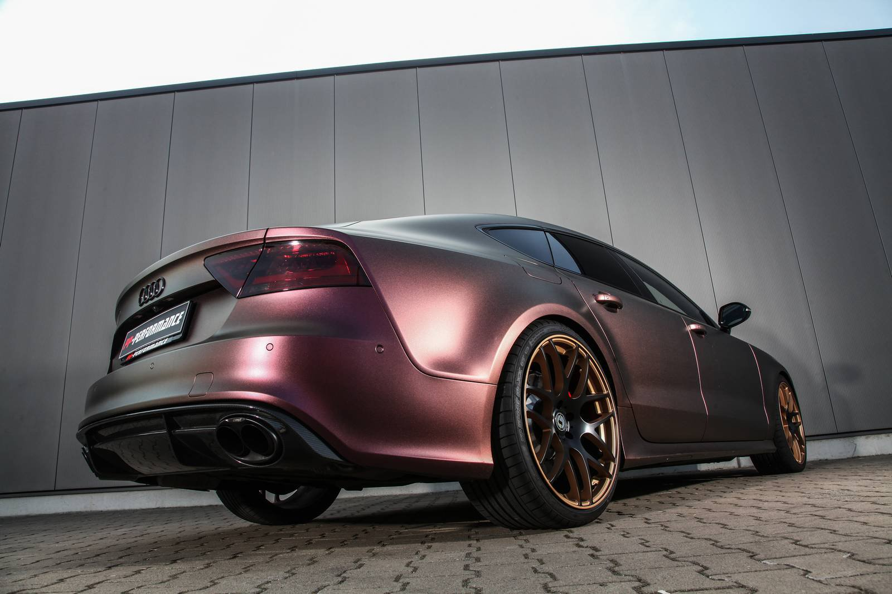
 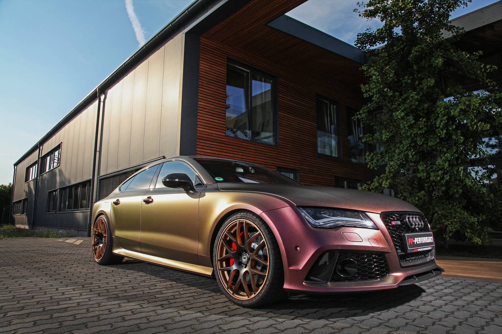
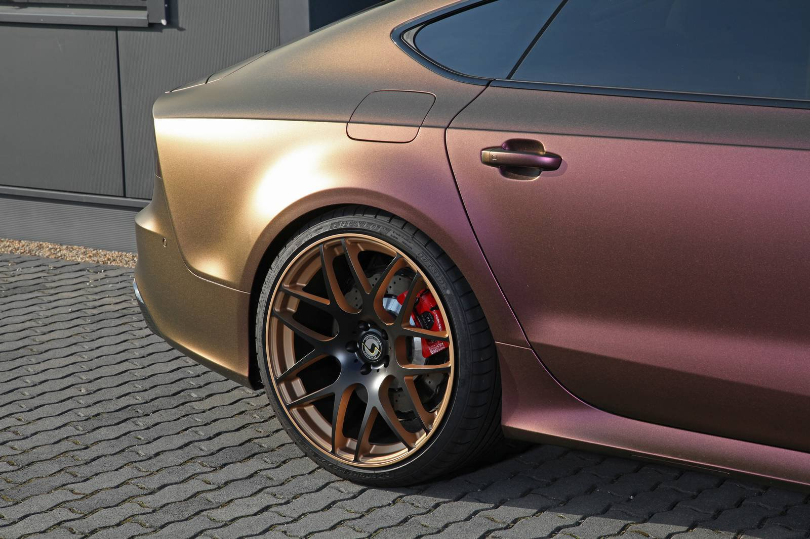
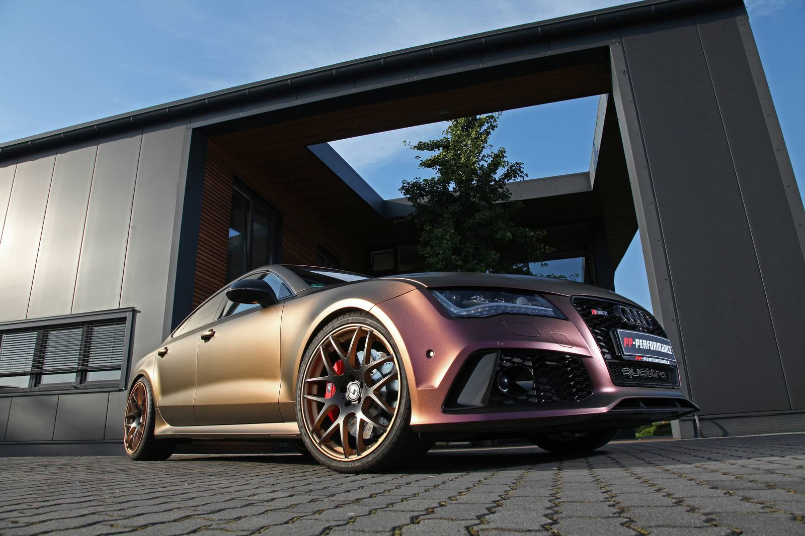
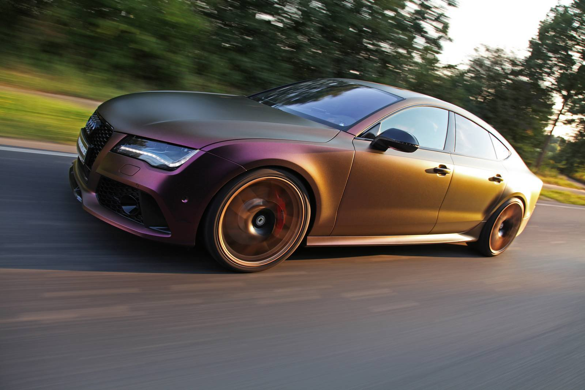
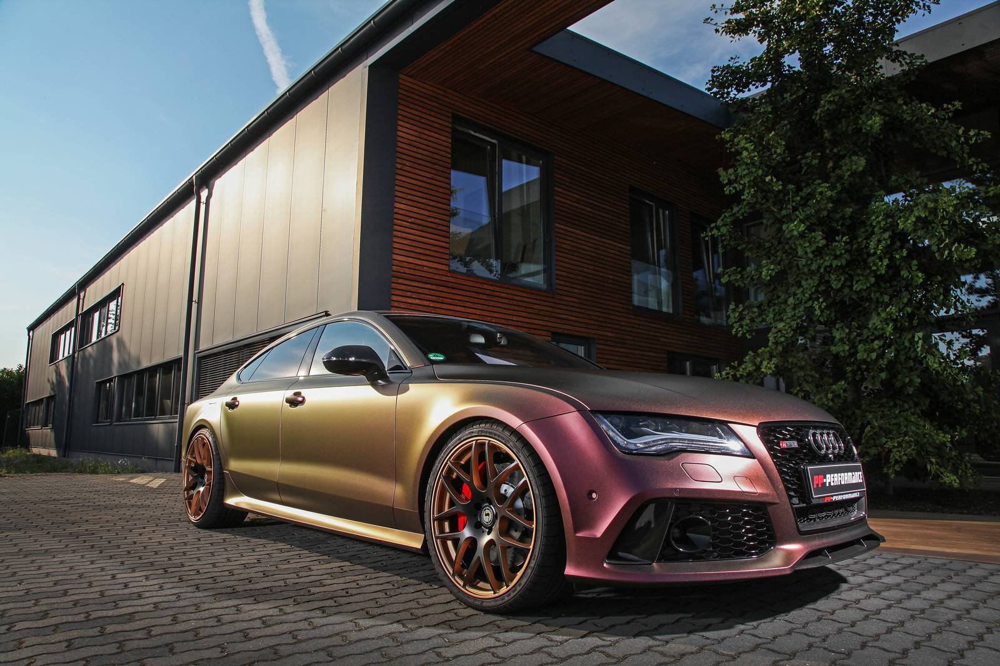
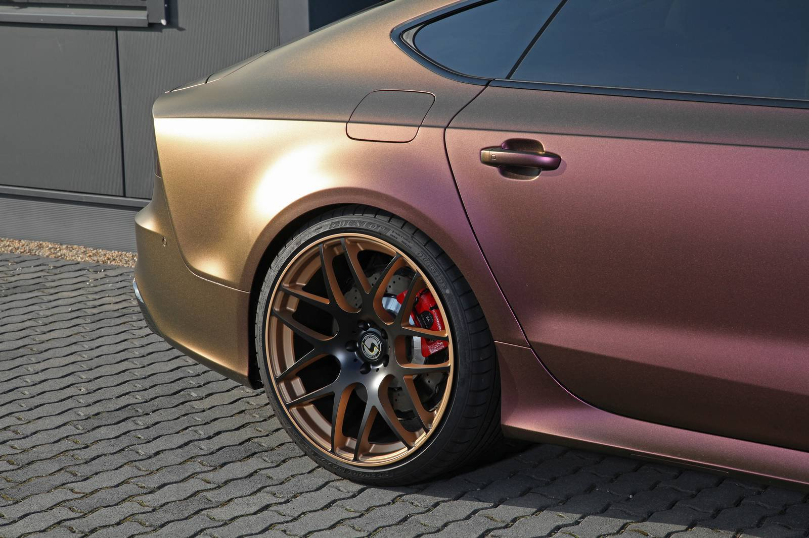
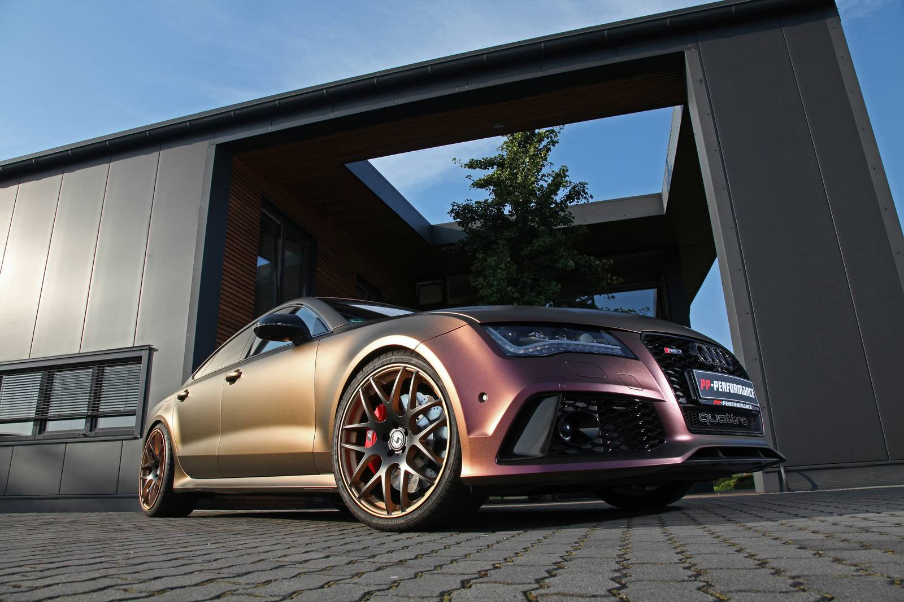
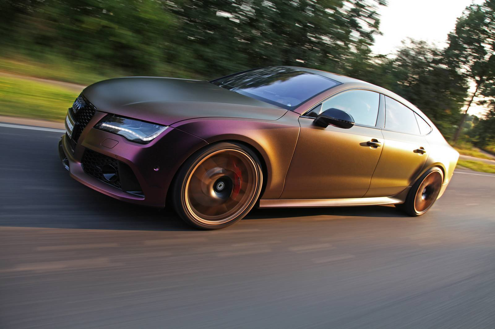
Audi в социальных сетях: